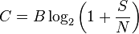
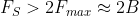

Teorema de Shannon (Capacidad de un canal)
Dice la máxima tasa de datos al transmitir información en un canal de comunicaciones con un ancho de banda concreto en la presencia de ruido:

donde
- C es la capacidad del canal, en bps
- B es el ancho de banda del canal en Hz (o ancho de la señal modulada en su caso)
- S es la media de señal recibida, medida en W
- N es la media de ruido recibido, medido en W
- si se usa S/N no se debe usar en decibelios
Teorema de Nyquist
Una función de ancho de banda limitado se puede reconstruir perfectamente a partir de una secuencia contable de muestras si el ancho de banda, B, no es mayor que la mitad de la tasa de muestreo (muestras por segundo)

- Aliasing y filtros antialiasing